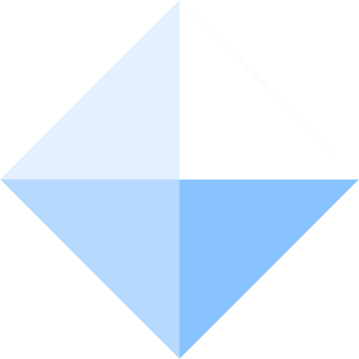
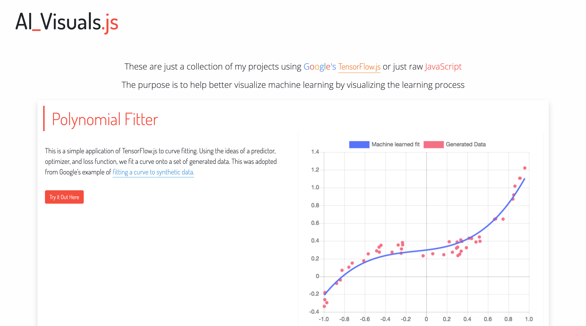
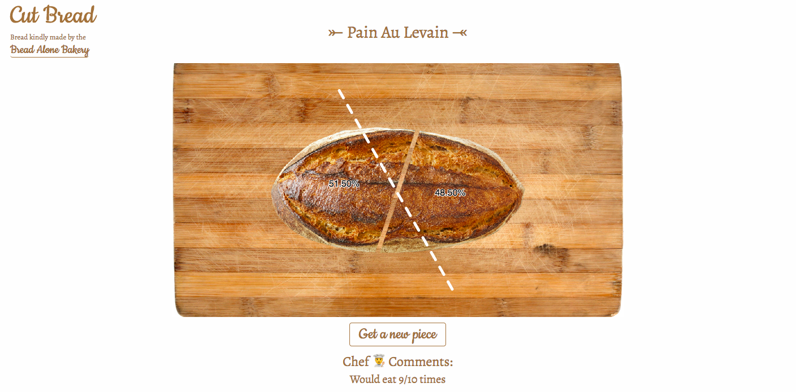

Stone Tao 
I'm an undergraduate student majoring in Cognitive Science with Specialization in Machine Learning and Neural Computation at UC San Diego, a part of the class of 2023.
I'm a full stack developer and love Computer Science and AI. I also dabble a little bit in design. Check out my Projects, Work Experience, About Me, or Awards
Pinned Projects
These are some of my favorite personal projects. These are often ones I spend much more time on, or ones that are the most whimisical of them all.
AI Visuals
This is a personal project that is a website that helps visualize machine learning at work with Google's TensorFlow.js or just raw JavaScript through various webapps.
Polytomizator

This is a website that auto generates poly art. It makes use of Delaunay triangulation, image filtering, computer vision techniques, and Poisson disk sampling to help auto-generate better low-poly art.
Cut Bread
A whimsical site about cutting bread. Yep, it's literally about cutting bread and looking at how evenly you can cut it.
Work Experience
Internship: Full stack developer and Designer at TAOS Data
Redeveloped and redesigned the company website: https://www.taosdata.com
- Developed to support English and Chinese, whilst also implementing WordPress and semantic HTML and meta tags. Built to extend compatability to as far as IE8 with Polyfills
- Setup an email server and forms to auto send emails to people who subscribe or download software
- Web Tech Stack: Aliyun, Apache, PHP, MySQL, Node.js, Express, WordPress
- Production Pipeline/Workflow: XAMPP, Git, Brackets, Autoprefixer, UglifyJS 3, SASS
Developed a Node.js Connector for the company’s main product, TDengine, an open source big data platform designed and optimized for IoT. GitHub repository at github.com/taosdata/TDengine/, now at 8000+ stars and 2000+ forks within 2 weeks after the initial open source release. Connector code is here.
- Built and manage the Node.js connector that allows Node.js applications to connect to TDengine.
- Created a C interface and used buffers to allow for high speed interaction with TDengine, creating sync and async functions with promises as well as implementing subscription and stream functionality.
- Wrote documentation for the connector and compiled with JsDocs, published to http://docs.taosdata.com/node
Developed Node.js parsers to parse and sync markdown documentation for TDengine into HTML and PHP.
- Synced GitHub documentation with documentation on website
- Reviwed and edited English documentation
Introduced apps and methods to improve workflow and quality for documentation writing and uploading.
- Using Typora as a markdown editor with the company website’s CSS theme to display markdown the same exact way it would display on the website. Introduced a set of standards for documentation formatting
Designed backdrops and posters
- Designed for the company for the Shenzhen Arch Summit, the Shenzhen IOTE conference, and the company’s meetups, working closely with the CEO on making final design decisions.
Awards
MIT Battlecode 2019 | Finalist, 9th overall, 4th out of high school teams (Competed in JS) – Jan. 2019
MIT Battlecode 2018 | Top 16 in international bracket, top 32 overall (Competed in Java) – Jan. 2018
Halite 3 | Placed 66th out of 4000+ students and professionals globally. Achieved admiral status by placing above Two Sigma’s base bot. 5th placed high school student out of 500+ HS students. 1st place JavaScript bot. – Nov. 2018 to Jan. 2019
Silver Medal - May 2018